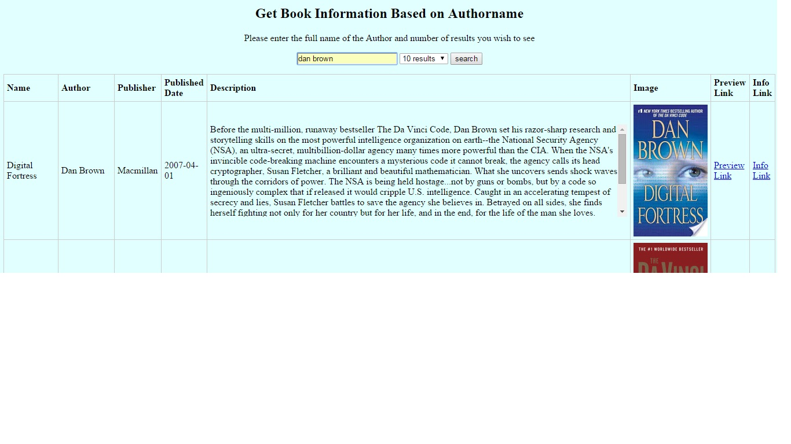
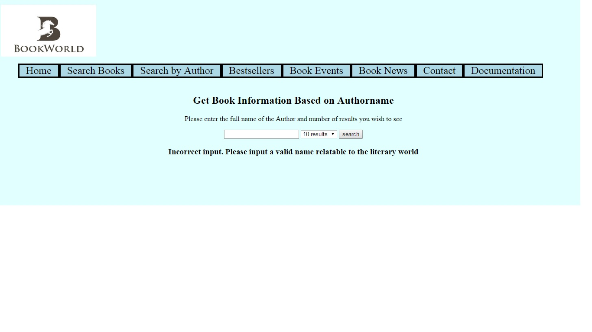

Search on author name consists of a textbox in which the user enters an authorname for searching about books from a particular author and the number of results one wishes to see.
- The options vary from a maximum of 10 results to a maximum of 50 results.
- The main reason of keeping such varied limits is that for most of the books the number of results fetched is fewer than 50.
Apart from some books like Bible and other religious books with varied publications, most of them can be easily incorporated in the 50 result limit.
- On button click or enter command, that search value is rendered in a table which has title, author, publisher, published date, description, preview and info links.
- This page is completely responsive and it turns into a vertical table for mobile phones and tablets.
- The search results are returned from Google Books API that fetches data using JSON
- If a user enters garbage value or a book name that doesn't exist, then the user is prompted to search again with a more precise name.

The above pic is a demonstration of valid data input by the user.

The above pic is a demonstration of null/empty data input by the user.
- There exist scenarios where the user input's a garbage value or a value for which there exist no results.
- These searches are handled using javascript, with the help of the predefined function data.hasOwnProperty(argument).

The above pic is a demonstration of invalid data input by the user.
Further Work : The page can be made more visually appealing by applying more css to the table.
Source Code
ASPX Code
JS Code
CSS Code
References
CSS Tricks